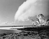

detonation

Definition: Detonation (from Latin detonare 'to thunder down/forth') is a type of combustion involving a supersonic exothermic front accelerating through a medium that eventually drives a shock front propagating directly in front of it. Detonations propagate supersonically through shock waves with speeds in the range of 1 km/sec and differ from deflagrations which have subsonic flame speeds in the range of 1 m/sec. Detonation is an explosion of fuel-air mixture. Compared to deflagration, detonation doesn't need to have an external oxidizer. Oxidizers and fuel mix when deflagration occurs. Detonation is more destructive than deflagrations. In detonation, the flame front travels through the air-fuel faster than sound; while in deflagration, the flame front travels through the air-fuel slower than sound.
Source: Wikipedia
Wikipedia Page (Something wrong with this association? Let us know.)
Wikidata Page (Something wrong with this association? Let us know.)